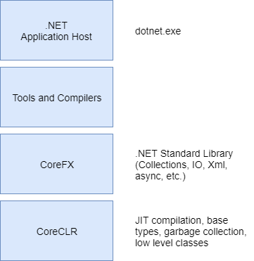

<div class="container-fluid">

  <h3>.Net Platforms</h3>

  <div *ngIf="this.slideNumber == 1">
    
  </div>
  <div *ngIf="this.slideNumber == 2">
    
  </div>
  <div *ngIf="this.slideNumber == 3">
    <h4>What is .NET Core (2.1) ?</h4>
    <h5>Cross platform (Windows, Mac, Linux) open source (GitHub) implementation of .NET Standard</h5>
    <h5>Deploy (publish) as either framework dependent (FDD) or self contained (SCD)</h5>
    
  </div>
</div>
